Ayudamos a empresas medianas y grandes a transformar sus modelos de gestión, operación y organización para ejecutar mejor, aumentar la productividad y capturar valor sostenible.
Hacemos visibles y transformamos las restricciones organizacionales que impiden ejecutar la estrategia, mejorar el desempeño y capturar valor.
Qué hacemosTransformamos la forma en que las organizaciones ejecutan, operan y se organizan — para que la estrategia deje de ser un plan y se convierta en resultados.
Combinamos diseño organizacional, excelencia operacional, gestión por procesos, Lean, Agile, sistemas de medición, adopción del cambio e inteligencia artificial.
Seleccionamos las capacidades que mejor responden al reto de cada cliente. Partimos del problema ejecutivo y del resultado esperado, no de una metodología.
No imponemos una metodología. Seleccionamos las capacidades que mejor responden al reto.
No vendemos herramientas ni metodologías. Intervenimos donde la organización pierde ejecución, velocidad, margen y capacidad de escalar.
Las prioridades no se convierten en decisiones, iniciativas y resultados consistentes.
Los procesos, estructuras y decisiones generan fricción, desperdicio y retrabajo.
El modelo operativo no soporta el crecimiento, la integración o nuevas exigencias del mercado.
Los cambios no se incorporan a las rutinas, indicadores y responsabilidades.
Las herramientas se adoptan sin rediseñar procesos, roles, gobierno y formas de trabajo.
Cinco líneas core y una línea complementaria de formación. Se combinan según lo que cada organización necesita resolver.
Somos una firma boutique. Nuestros socios participan directamente en el diagnóstico, el diseño y las decisiones críticas.
Hemos liderado operaciones y transformaciones desde dentro de las organizaciones, no solo desde la consultoría.
Nuestros socios y líderes participan directamente en el diagnóstico, el diseño y las decisiones críticas.
Conectamos estrategia, estructura, procesos, tecnología, indicadores y comportamientos para resolver causas, no síntomas.
Trabajamos con los equipos para convertir las decisiones en nuevas formas de operar y gestionar.
Incorporamos IA y herramientas digitales cuando generan valor real y fortalecen el modelo de gestión.
Del problema al resultado, dejando capacidades instaladas para que la mejora se sostenga sin depender de nosotros.
Comprendemos el negocio y el resultado que se quiere lograr.
Detectamos las restricciones sistémicas que limitan el desempeño.
Diseñamos el modelo de gestión, operación u organización requerido.
Acompañamos la implementación y la adopción con los equipos responsables.
Medimos resultados y dejamos capacidades instaladas para sostener la mejora.
La IA no transforma por sí sola una organización. El valor aparece cuando se rediseñan procesos, roles, decisiones y formas de trabajo.
REWIRE ayuda a las compañías a identificar oportunidades de alto impacto, priorizar casos de uso y preparar su modelo operativo y de gestión para incorporar inteligencia artificial de manera ordenada, segura y orientada a resultados.
Cada caso sigue una estructura homogénea: contexto, problema, intervención y resultado. Presentamos casos anonimizados por sector cuando media confidencialidad.
Operación de back-office con alto volumen y presión de costos.
Procesos con variabilidad y retrabajo que limitaban la capacidad.
Mapeo end-to-end, gestión visual diaria, tablero de control y sprints de mejora.
Grupo en crecimiento por adquisiciones, con estructuras superpuestas.
Decisiones lentas y responsabilidades difusas entre áreas.
Modelo operativo objetivo, RACI por proceso crítico y gobierno de decisión.
Trámites de alto volumen con impacto directo en el ciudadano.
Flujos con pasos sin valor y tiempos de ciclo elevados.
Rediseño del flujo, automatización selectiva y rutinas de gestión por segmento.
Empresa en alto crecimiento con estrategia clara pero dispersa.
Exceso de iniciativas sin foco ni seguimiento ejecutivo.
Indicadores por nivel, tablero ejecutivo, cadencias y accountability instalado.
Áreas corporativas con formas de trabajo rígidas y poco colaborativas.
Baja adopción de nuevas formas de trabajo fuera de tecnología.
Diseño de células, rituales adaptados y priorización por valor.
Operaciones intensivas en conocimiento con oportunidad de IA.
Interés en IA sin un modelo para capturar valor real.
Mapa de oportunidades, priorización por business case y pilotos con KPIs.
Cifras ilustrativas de patrones de resultado. Los casos, resultados y testimonios publicables se documentan con autorización del cliente.
REWIRE combina experiencia ejecutiva, conocimiento del negocio y metodologías de transformación para ayudar a las organizaciones a ejecutar mejor y generar resultados sostenibles. Nuestro equipo ha liderado operaciones, procesos y transformaciones en los sectores financiero, de servicios, productivo y de seguridad social.
Cuéntenos su reto principal. En una primera conversación identificamos las restricciones que más limitan el resultado y proponemos un siguiente paso concreto — sin compromiso.
Nuestro propósito se ha traducido en la transformación de modelos de gestión en 45 clientes, a quienes hemos apoyado para lograr mayores niveles de agilidad y productividad en más de 80 procesos de negocio.
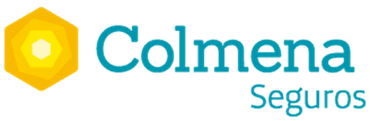
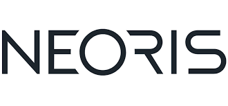
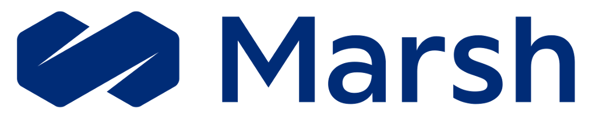
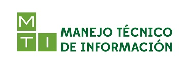
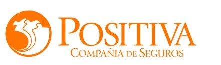
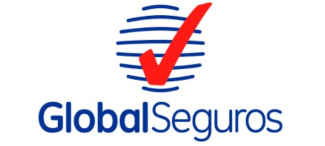
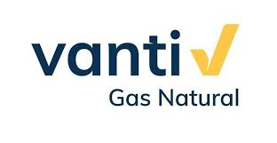
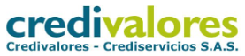
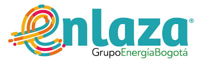
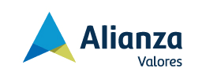
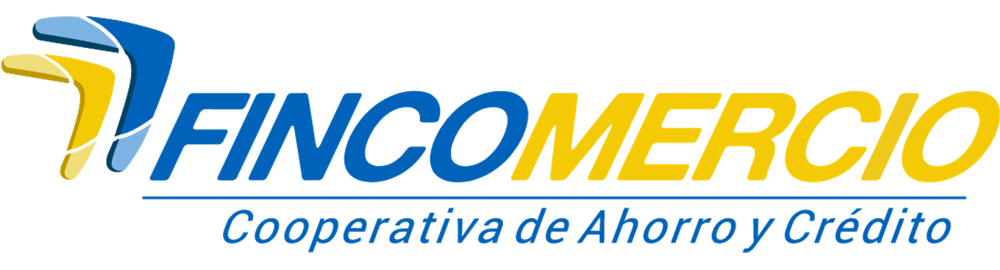
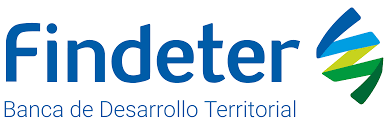
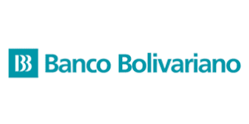
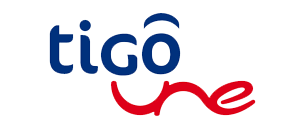
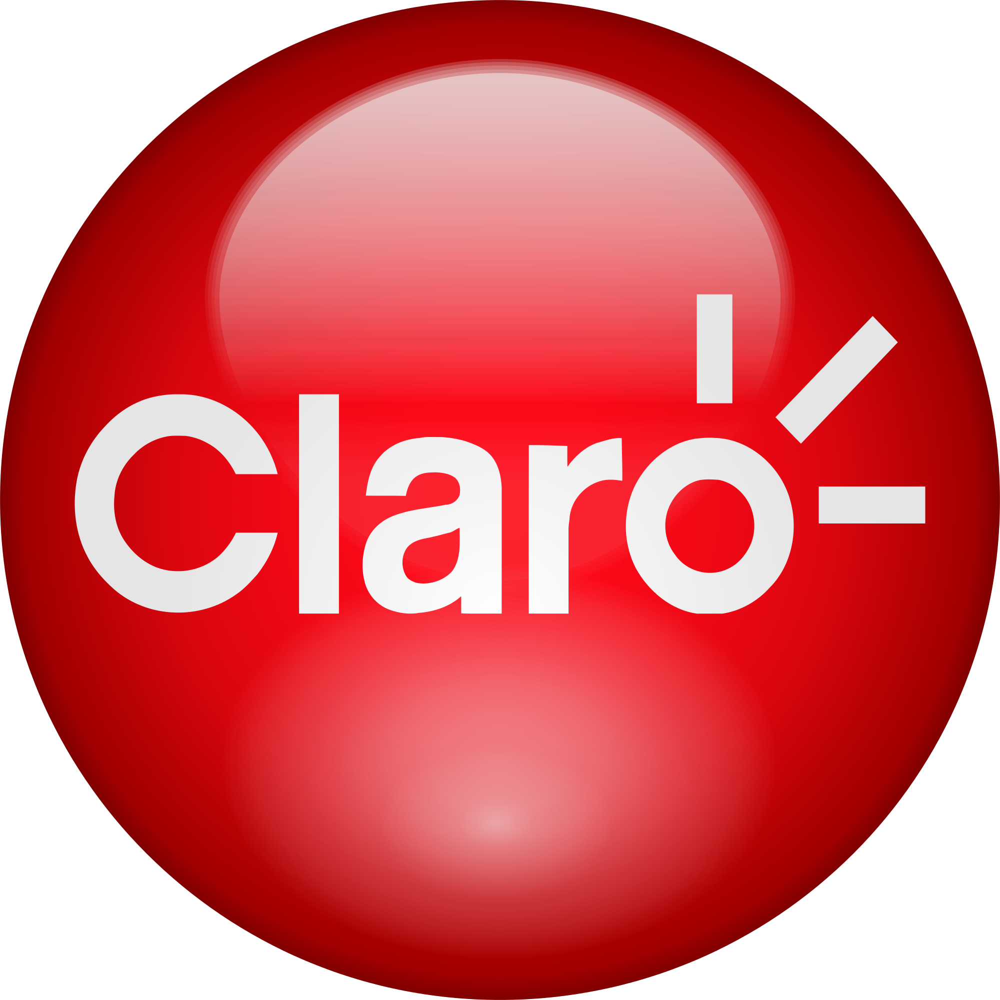
Clientes y logotipos tomados de la relación oficial publicada por REWIRE.
Intervenciones reales de rediseño de procesos, modelos de gestión y nuevas formas de trabajo, de punta a punta.
Ver los cinco casos completosRediseño conceptual del proceso, nueva estructura organizacional e iniciativas tácticas basadas en arquetipos y herramientas LEAN, con acompañamiento de largo plazo.
Diagnóstico, diseño y ejecución de pilotos junto a las VP de Estrategia, Tecnología, Técnica y Financiera para adoptar nuevas formas de trabajo.
Intervención de sendas de valor con metodología LEAN para generar escalabilidad, efectividad y una mejor experiencia de los usuarios.
Acompañamiento de un año para incorporar LEAN y preparar los procesos principales de la compañía para crecer sin perder productividad.
Transformación de dos sendas de valor con un plan de acción de la cultura organizacional necesaria para sostener el cambio.
Definición de objetivos estratégicos y mapa estratégico, con rediseño de los principales procesos desde el diagnóstico hasta los pilotos.
“REWIRE nos deja instaladas unas metodologías que serán fundamentales para transformar nuestro sistema de gestión con procesos más dinámicos y eficientes. También se logró cambiar la mentalidad de la gente hacia nuevas formas de pensar y organizar procesos.”
“REWIRE impulsó a TU a generar transformaciones profundas, no solo en el diseño de sus procesos, sino en la forma de gestionar a los equipos, medir el impacto de sus actividades e incorporar una práctica real de mejora continua.”
“El trabajo con Rewire nos movilizó a renunciar a viejos paradigmas y a lograr procesos más livianos y productivos. Hoy tenemos equipos con mentalidades y comportamientos capaces de asumir los cambios del mercado con agilidad.”
“Las metas logradas han superado ampliamente nuestras expectativas. Hemos mejorado los tiempos de respuesta, la productividad del talento humano, el trabajo colaborativo entre áreas y la eficiencia de los procesos.”
“Con la intervención de Rewire alineamos procesos con la estrategia de la compañía, logrando mejoras transversales. Recibimos acompañamiento en la ejecución, más allá de un diagnóstico y unas recomendaciones.”
“REWIRE no se limitó a guiarnos y transmitir el conocimiento, sino también a implementar y sembrar la metodología de forma práctica y real. Vimos beneficios en reducción de tiempos, servicio y calidad de los procesos.”
Cinco intervenciones reales muestran cómo REWIRE rediseña sendas de valor, elimina fricción e instala nuevas formas de trabajar con resultados medibles.
Reflexiones sobre efectividad organizacional, productividad, modelos de gestión y transformación — desde el terreno, no desde la teoría.
Entrevistas, publicaciones y referencias donde REWIRE y sus socios comparten su visión sobre productividad, excelencia operacional y efectividad organizacional.
Las formas tradicionales de trabajar, con su foco funcional, su jerarquía enraizada y los ciclos mensuales de seguimiento, no permiten responder al imperativo de la velocidad.
Ver entrevista →Carlos Zuleta, fundador de REWIRE, conversa con Mauricio Rodríguez sobre cómo acompañar a las empresas colombianas a alcanzar niveles superiores de excelencia operacional.
Oír entrevista →LEAN, AGILE, la gestión enfocada en valor y los desafíos culturales que representan, explicados a partir de casos, aprendizajes y buenas prácticas.
Ver webinar →LEAN, AGILE, la gestión enfocada en valor y los desafíos culturales que representan, con recomendaciones para una gestión cultural efectiva.
Ver webinar →Entrevista a Carlos Zuleta Londoño sobre lean management y el poder de la mejora continua a escala en la organización.
Leer publicación →Caso de estudio de la Darden School of Business sobre la aplicación de los principios lean en la transformación organizacional.
Ver caso →Publicación de referencia en la conversación sobre productividad, servicio y excelencia operacional en las organizaciones.
Ver libro →